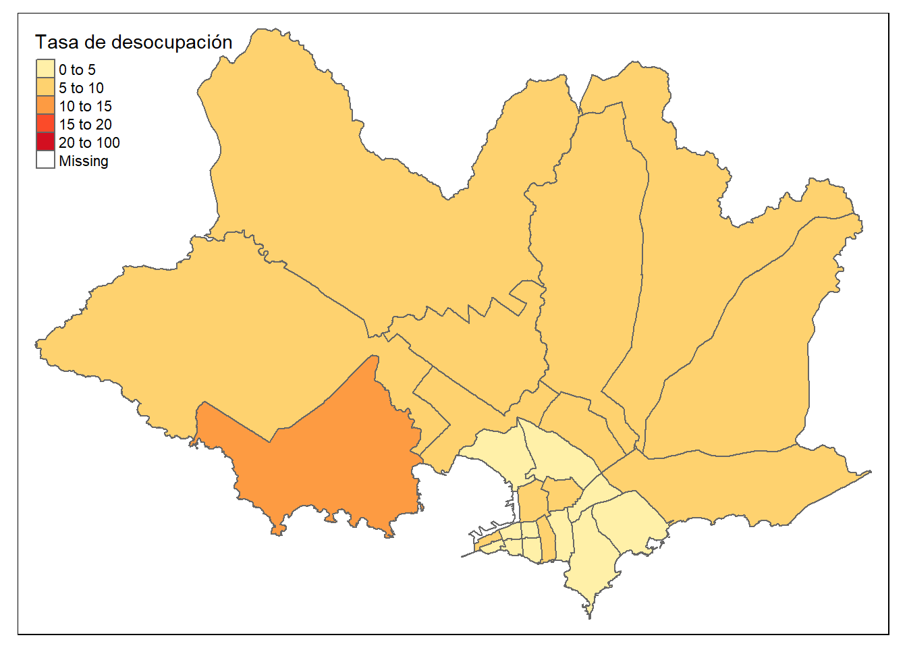
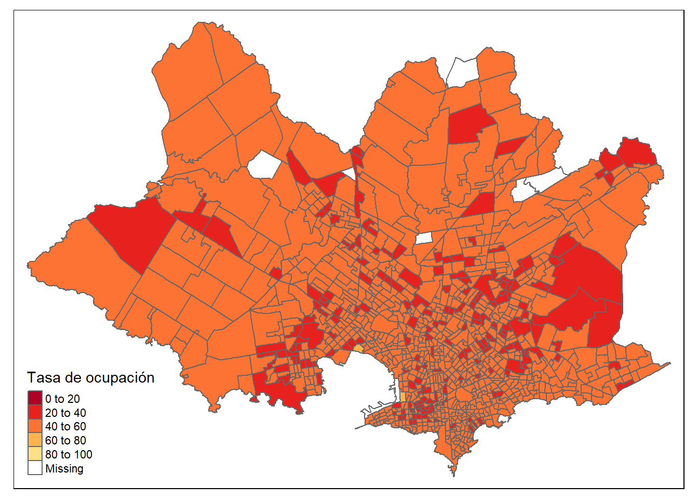
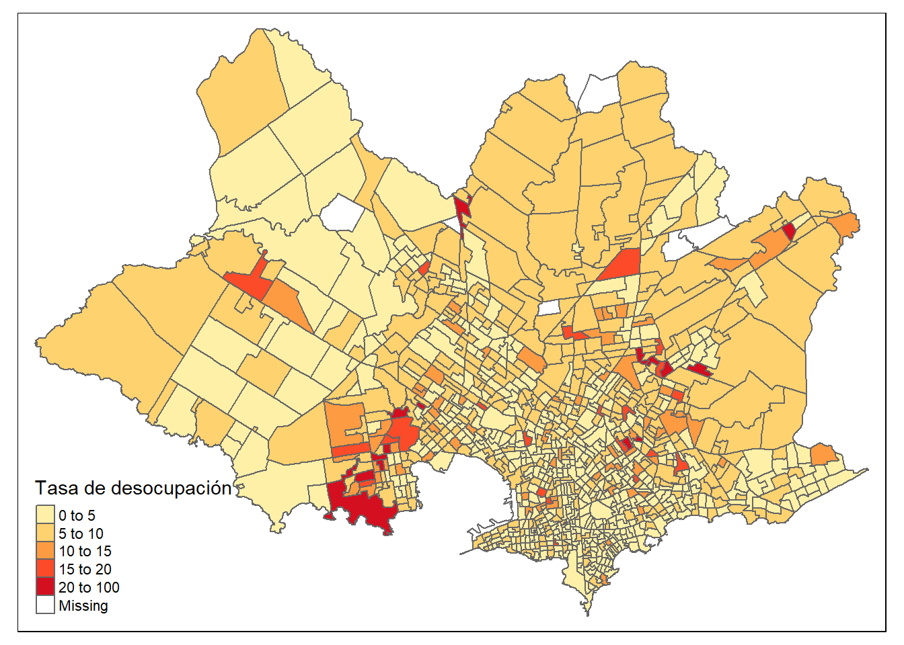

rm(list =ls())
library(tidyverse)
library(bayesplot)
library(scales)
library(kableExtra)
library(patchwork)
library(cmdstanr)
library(printr)Estimación del empleo
CEPAL - División de Estadísticas Sociales
Introducción
En la estimación de áreas pequeñas, el modelo de muestreo captura la relación entre las estimaciones directa de la encuesta que siempre se acompaña de un error de estimación y el parámetro de interés que están tratando de estimar. Para los datos de empleo en la encuesta, el modelo de muestreo podría ser:
\[ Y_d \sim Multinon\left( \theta_{1d}, \theta_{2d},\theta_{3d} \right) \]
con \(d = 1,\cdots, D\) representa los dominios de interés. Los parámetros de interés \(\theta_{1d}, \theta_{2d}\) y \(\theta_{3d}\) representan la proporción de personas en algún estado laboral (Ocupado, Desocupado o Inactivo). Las estimaciones directas son representadas por \(\hat{\theta}_{1d}, \hat{\theta}_{2d}\) y \(\hat{\theta}_{3d}\) respectivamente.
Modelo bayesiano
Para definir el modelo bayesiando debemos considerar una función de enlace para \(\boldsymbol{\theta_d} = \left( \theta_{1d}, \theta_{2d},\theta_{3d} \right)\). Teniendo presente que la distribución multinomial es la generalización de la distribución binomial la función de enlace natural seria la transformación logit.
Esta función de enlace intenta capturar la relación entre \(\boldsymbol{\theta_d}\) y cualquier información auxiliar que esté disponible. En este caso, se desea relacionar la condición de actividad económica (Ocupado, Desocupado e Inactivo) con el sexo, edad, años de estudio, etnia, departamento, área geográfica. También podemos utilizar variables auxiliares provenientes de registros administrativos o fuentes externas como la información satelital.
Dado que la variable de interés se puede modelar con la distribución Multinomial, con tres categorías.
\[ Y_{d} \sim Multinon\left( \boldsymbol{\theta}_d \right) \]
con \(\sum_{k=1}^{3} \theta_i = 1\) al realizar la transformación logit es posible llegar a
\[ \begin{eqnarray*} \theta_{1d} &=& \frac{1}{1+ \exp\left( \mu_{1d} \right) + \exp\left( \mu_{2d} \right)}\\\\ \theta_{2d} &=& \frac{\exp\left( \mu_{1d} \right)}{1+ \exp\left( \mu_{1d} \right) + \exp\left( \mu_{2d} \right)}\\\\ \theta_{3d} &=& \frac{\exp\left( \mu_{2d} \right)}{1+ \exp\left( \mu_{1d} \right) + \exp\left( \mu_{2d} \right)}\\ \end{eqnarray*} \]
Ahora es posible definir \(\mu_{1d}\) y \(\mu_{2d}\) como:
\[ \begin{eqnarray*} \mu_{1d}&=&\boldsymbol{X}_d^{T}\boldsymbol{\beta_1}+u_{1d}\\ \mu_{2d}&=&\boldsymbol{X}_d^{T}\boldsymbol{\beta_2}+u_{2d} \end{eqnarray*} \]
para \(u_{1d}\sim N\left(0,\sigma_{u}\right)\) y \(u_{2d}\sim N\left(0,\sigma_{u}\right)\), siendo este el caso más simple. Para nuestro escenario se asume que \(Cor\left(u_{1d},u_{2d} \right) \neq 0\) por tanto, \(\boldsymbol{u}_d = \left(u_{1d},u_{2d} \right) \sim N_2\left(0,\Sigma_{u}\right)\) bajo esta condiciones la distribuciones previas estarían dadas por:
\[ \begin{eqnarray*} \beta_k & \sim & N(\mu_0, \tau^2_0)\\ \Sigma_{u} &\sim& Wishart\left( \Gamma_0, m_0 \right) \end{eqnarray*} \]
A continuación se muestra el proceso realizado para la obtención de la predicción de la tasa de desocupación.
Proceso de estimación en R
Las librerías utilizadas para desarrollar la metodología son las siguientes.
Un conjunto de funciones desarrolladas para realizar de forma eficiente los procesos están consignadas en la siguiente rutina.
source("0Funciones/funciones_mrp.R")
source("0Funciones/Funciones_empleo.R")Entre las funciones incluidas en el archivo encuentra
Indicadores_encuesta: Realiza la estimación de las tasa de interés, de igual forma se tiene la función de Indicadores_censo para el calculo de los indicadores en el censo. Los indicadores son calculados como sigue:
Tasa de participación:
\[ TP = \frac{Población\ económicamente\ activa}{Población\ en\ edad\ de\ trabajar}\times 100 \]
Tasa de ocupados
\[ TO = \frac{Población\ de\ ocupados}{Población\ en\ edad\ de trabajar}\times 100 \]
Tasa de desocupados
\[ TD = \frac{Población\ de\ desocupados}{Población\ económicamente \ activa}\times 100 \]
Importando datos
Los datos empleados en esta ocasión corresponden a la ultima encuesta de hogares, la cual ha sido estandarizada por CEPAL y se encuentra disponible en BADEHOG. Se filtran las personas con una edad mayor a los 15 años en el censo y la encuesta.
En interés se centra en la estimación de la Tasa de ocupados, Tasa de desocupados y Tasa de Participación. La variable respuesta es la condición de actividad económica, la cual se identifica en la base de datos como empleo y toma los valores de:
Niño = -1
Ocupado = 1
Desocupado = 2
Inactiva = 3 y
No sabe, no responde = 9
El proceso se simplifica al considerar solo tres estados ocupados, desocupados e inactivos.
encuesta_mrp <- readRDS("Data/encuestaURY20N_Montevideo.rds") %>%
filter(edad > 13, condact3 %in% 1:3) %>%
transmute(
depto = "MONTEVIDEO",
mpio = str_pad(
string = secc,
pad = "1",
width = 3
),
mpio = str_pad(
string = mpio,
pad = "0",
width = 4
),
segm = paste0(mpio,segm),
empleo = condact3,
area = case_when(areageo2 == 1 ~ "1", TRUE ~ "0"),
sexo = as.character(sexo),
anoest = case_when(
edad < 5 | anoest == -1 ~ "98" , #No aplica
anoest < 1 ~ "1", # Sin educación
anoest <= 6 ~ "2", # 1 - 6
anoest <= 12 ~ "3", # 7 - 12
anoest > 12 ~ "4", # mas de 12
anoest == 99 ~ "99", #NS/NR ##### valida con cuidado
TRUE ~ "Error"
),
edad = case_when(edad < 15 ~ "1",
edad < 30 ~ "2",
edad < 45 ~ "3",
edad < 65 ~ "4",
TRUE ~ "5"),
etnia = case_when(etnia_ee == 1 ~ "1", # Indígena
etnia_ee == 2 ~ "2", # afro negro mulato
TRUE ~ "3"), # Otro
fep = `_fep`
) | depto | mpio | segm | empleo | area | sexo | anoest | edad | etnia | fep |
|---|---|---|---|---|---|---|---|---|---|
| MONTEVIDEO | 0105 | 0105101 | 3 | 1 | 2 | 3 | 5 | 3 | 36.6667 |
| MONTEVIDEO | 0111 | 0111207 | 3 | 1 | 1 | 2 | 3 | 3 | 23.1001 |
| MONTEVIDEO | 0111 | 0111211 | 3 | 1 | 2 | 2 | 5 | 2 | 33.7500 |
| MONTEVIDEO | 0111 | 0111002 | 3 | 1 | 2 | 2 | 5 | 3 | 14.7685 |
| MONTEVIDEO | 0121 | 0121019 | 3 | 1 | 1 | 2 | 2 | 3 | 20.4917 |
| MONTEVIDEO | 0110 | 0110126 | 3 | 1 | 2 | 4 | 5 | 3 | 24.4179 |
| MONTEVIDEO | 0110 | 0110126 | 3 | 1 | 1 | 3 | 4 | 3 | 24.4179 |
| MONTEVIDEO | 0106 | 0106103 | 3 | 1 | 1 | 3 | 2 | 3 | 24.2743 |
| MONTEVIDEO | 0199 | 0199064 | 3 | 1 | 2 | 2 | 5 | 3 | 23.5296 |
| MONTEVIDEO | 0110 | 0110126 | 3 | 1 | 2 | 4 | 5 | 3 | 15.8736 |
La base del censo fue estandarizado previamente, por tanto, se debe realizar la lectura del archivo estandarizado y excluir a los niños.
censo_mrp <- readRDS("Data/censo_Montevideo.rds") %>%
filter(edad != "1")| depto | mpio | segm | area | sexo | edad | etnia | anoest | n |
|---|---|---|---|---|---|---|---|---|
| MONTEVIDEO | 0116 | 0116035 | 0 | 1 | 2 | 3 | 99 | 2132 |
| MONTEVIDEO | 0116 | 0116035 | 0 | 1 | 3 | 3 | 99 | 1155 |
| MONTEVIDEO | 0113 | 0113236 | 1 | 2 | 2 | 3 | 3 | 538 |
| MONTEVIDEO | 0113 | 0113236 | 1 | 1 | 2 | 3 | 3 | 487 |
| MONTEVIDEO | 0113 | 0113051 | 1 | 1 | 2 | 3 | 99 | 473 |
| MONTEVIDEO | 0113 | 0113051 | 1 | 2 | 2 | 3 | 99 | 459 |
| MONTEVIDEO | 0113 | 0113242 | 1 | 1 | 2 | 3 | 3 | 457 |
| MONTEVIDEO | 0113 | 0113242 | 1 | 2 | 2 | 3 | 3 | 434 |
| MONTEVIDEO | 0109 | 0109047 | 1 | 2 | 2 | 3 | 3 | 430 |
| MONTEVIDEO | 0113 | 0113236 | 1 | 1 | 3 | 3 | 3 | 386 |
La información auxiliar disponible fue extraída del censo (tasa de desocupación) e imágenes satelitales (luces nocturnas, uso del suelo urbano y uso del suelo cultivos)
tasa_desocupados <- readRDS("Data/tasa_desocupacion_seccion.rds")
statelevel_predictors_df <- tasa_desocupados| depto | segm | mpio | tasa_desocupacion | F182013_stable_lights | X2016_crops.coverfraction | X2016_urban.coverfraction |
|---|---|---|---|---|---|---|
| MONTEVIDEO | 0101001 | 0101 | 0.0822 | 9.1412 | 0 | 14.8078 |
| MONTEVIDEO | 0101002 | 0101 | 0.0607 | 12.1059 | 0 | 20.4549 |
| MONTEVIDEO | 0101003 | 0101 | 0.0426 | 7.7255 | 0 | 12.1412 |
| MONTEVIDEO | 0101104 | 0101 | 0.0508 | 4.6941 | 0 | 6.7451 |
| MONTEVIDEO | 0101105 | 0101 | 0.0701 | 2.9255 | 0 | 4.7216 |
| MONTEVIDEO | 0101204 | 0101 | 0.0844 | 4.9412 | 0 | 7.6392 |
| MONTEVIDEO | 0101205 | 0101 | 0.0391 | 2.9647 | 0 | 9.7725 |
| MONTEVIDEO | 0102001 | 0102 | 0.0618 | 13.8275 | 0 | 4.0000 |
| MONTEVIDEO | 0102003 | 0102 | 0.0722 | 6.1255 | 0 | 7.7333 |
| MONTEVIDEO | 0102004 | 0102 | 0.0621 | 5.2588 | 0 | 6.8392 |
- tasa_desocupacion: Información extraída del último censo del país.
- F182013_stable_lights, X2016_crops.coverfraction y X2016_urban.coverfraction información satelital extraída de google earth engine.
Programando el Modelo en STAN
El modelo escrito en STAN queda con la siguiente estructura.
// La función pred_theta es definida para realizar el calculo de las predicciones.
functions {
matrix pred_theta(matrix Xp, matrix Zp, int p, matrix beta, matrix u){
// Xp: Matriz de efectos fijos
// Zp: Matriz de efectos aleatorios
// p: Número de categorías de Y.
// beta: Matriz de coeficientes de los efectos fijos
// u: Matriz de coeficiente de los efectos aleatorios.
int D1 = rows(Xp);
real num1[D1, p];
real den1[D1];
matrix[D1,p] theta_p;
for(d in 1:D1){
num1[d, 1] = 1;
num1[d, 2] = exp(Xp[d, ] * beta[1, ]' + Zp[d, ] * u[1, ]') ;
num1[d, 3] = exp(Xp[d, ] * beta[2, ]' + Zp[d, ] * u[2, ]') ;
den1[d] = sum(num1[d, ]);
}
for(d in 1:D1){
for(i in 2:p){
theta_p[d, i] = num1[d, i]/den1[d];
}
theta_p[d, 1] = 1/den1[d];
}
return theta_p ;
}
}
data {
int<lower=1> D; // número de postestrto
int<lower=1> D1; // número de dominios por predecir
int<lower=1> P; // categorías
int<lower=1> K; // cantidad de regresores
int<lower=1> Kz; // cantidad de regresores en Z
int y[D, P]; // matriz de datos
matrix[D, K] X; // matriz de covariables
matrix[D, Kz] Z; // matriz de covariables
matrix[D1, K] Xp; // matriz de covariables
matrix[D1, Kz] Zp; // matriz de covariables
}
parameters {
matrix[P-1, K] beta;// matriz de parámetros
vector<lower=0>[P-1] sigma_u; // random effects standard deviations
// declare L_u to be the Choleski factor of a 2x2 correlation matrix
cholesky_factor_corr[P-1] L_u;
matrix[P-1, Kz] z_u;
}
transformed parameters {
simplex[P] theta[D];// vector de parámetros;
real num[D, P];
real den[D];
// this transform random effects so that they have the correlation
// matrix specified by the correlation matrix above
matrix[P-1, Kz] u; // random effect matrix
u = diag_pre_multiply(sigma_u, L_u) * z_u;
for(d in 1:D){
num[d, 1] = 1;
num[d, 2] = exp(X[d, ] * beta[1, ]' + Z[d, ] * u[1, ]') ;
num[d, 3] = exp(X[d, ] * beta[2, ]' + Z[d, ] * u[2, ]') ;
den[d] = sum(num[d, ]);
}
for(d in 1:D){
for(p in 2:P){
theta[d, p] = num[d, p]/den[d];
}
theta[d, 1] = 1/den[d];
}
}
model {
L_u ~ lkj_corr_cholesky(1); // LKJ prior for the correlation matrix
to_vector(z_u) ~ normal(0, 1);
sigma_u ~ cauchy(0, 50);
to_vector(beta) ~ normal(0, 100);
for(d in 1:D){
target += multinomial_lpmf(y[d, ] | theta[d, ]);
}
}
generated quantities {
// predict
matrix[D1,P] theta_p;// vector de parámetros;
matrix[2, 2] Omega;
vector<lower=0>[2] sdcomprobar;
sdcomprobar[1] = sd(u[1, ]);
sdcomprobar[2] = sd(u[2, ]);
Omega = L_u * L_u'; // so that it return the correlation matrix
// predicción
theta_p = pred_theta(Xp,Zp,P, beta, u) ;
}La compilación del modelo se ejecuta con cmdstan_model
fit <-
cmdstan_model(
stan_file = "Data/modelosStan/Multinivel_multinomial.stan",
compile = TRUE)Niveles de agregación para colapsar encuesta
La estimación del modelo multinomial se realiza mediante el conteo del número de éxitos en cada categoría, es decir, dadas las variables \(X\) cuantas personas de la encuestas están en cada uno de los estados. Para lograr hacer el conteo identificamos las variables de agregación.
byAgrega <- c("depto", "mpio", "segm" ,
"empleo", "area", "sexo",
"anoest", "edad", "etnia")Creando base con la encuesta agregada
El resultado de agregar la base de dato se muestra a continuación:
encuesta_df_agg <-
encuesta_mrp %>%
group_by_at(all_of(byAgrega)) %>%
summarise(n = n(),
.groups = "drop")Después de agregar la base se ordenan las categorías en las columnas así como se muestra a continuación.
encuesta_df_agg %<>%
spread(key = "empleo",
value = "n", sep = "_" ,fill = 0) %>%
arrange(desc(empleo_1))| depto | mpio | segm | area | sexo | anoest | edad | etnia | empleo_1 | empleo_2 | empleo_3 |
|---|---|---|---|---|---|---|---|---|---|---|
| MONTEVIDEO | 0111 | 0111135 | 1 | 2 | 3 | 3 | 3 | 26 | 2 | 1 |
| MONTEVIDEO | 0115 | 0115107 | 1 | 2 | 4 | 3 | 3 | 23 | 1 | 0 |
| MONTEVIDEO | 0110 | 0110059 | 1 | 2 | 4 | 4 | 3 | 21 | 1 | 5 |
| MONTEVIDEO | 0110 | 0110064 | 1 | 1 | 4 | 4 | 3 | 21 | 2 | 3 |
| MONTEVIDEO | 0121 | 0121007 | 1 | 2 | 3 | 3 | 3 | 21 | 0 | 0 |
| MONTEVIDEO | 0110 | 0110135 | 1 | 2 | 4 | 4 | 3 | 19 | 0 | 0 |
| MONTEVIDEO | 0118 | 0118206 | 1 | 2 | 4 | 4 | 3 | 19 | 0 | 0 |
| MONTEVIDEO | 0118 | 0118229 | 1 | 2 | 4 | 3 | 3 | 19 | 0 | 0 |
| MONTEVIDEO | 0124 | 0124210 | 1 | 1 | 4 | 4 | 3 | 19 | 0 | 0 |
| MONTEVIDEO | 0113 | 0113135 | 1 | 1 | 3 | 2 | 3 | 18 | 1 | 7 |
por último, incorporamos la información proveniente de otras fuentes.
encuesta_df_agg <- inner_join(encuesta_df_agg,
statelevel_predictors_df)Dado que STAN permite hacer las predicciones de forma inmediata, debemos incluir la información auxiliar a la base del censo.
censo_df <- inner_join(censo_mrp,
statelevel_predictors_df) %>%
ungroup()Parámetros del modelo
Los parámetros son incluidos en una lista, definiendo cada argumento por separado:
- \(Y\) Matriz de con los conteos para cada categoría.
Y <- encuesta_df_agg %>% select(matches("empleo")) %>%
as.matrix(.)- \(X\) Matriz con los efectos fijos en la encuesta:
model_fijo <- formula(~ -1 + sexo +
anoest +
edad +
etnia +
tasa_desocupacion +
F182013_stable_lights +
X2016_urban.coverfraction)
X <- encuesta_df_agg %>%
model.matrix(model_fijo, data = .) - \(Z\) Matriz con los efectos aleatorios en la encuesta:
Z <- encuesta_df_agg %>% select(matches("segm")) %>%
model.matrix( ~ -1+ ., data = .)%>%
as.matrix(.)- \(Xp\) Matriz con los efectos fijos en el censo:
Xp <- censo_df %>%
model.matrix(model_fijo, data = .) - \(Zp\) Matriz con los efectos aleatorios en el censo:
Zp <- censo_df %>% select(matches("segm")) %>%
model.matrix( ~ -1+ ., data = .)%>%
as.matrix(.)Validando X y Xp
Dado que el código escrito para STAN NO realiza la validación de variables como lo hace R, es necesario realizar esas validaciones de forma externa al programa. En este caso, identifican las columnas comunes entre los efectos fijos \(X\) y \(Xp\) y los efectos aleatorios \(Z\) y \(Zp\), en caso de identificar diferencias, están deben ser introducidas de forma manual a \(Xp\) y \(Zp\).
# Lista de elementos presentes en X pero no en Xp
# setdiff(colnames(X) ,colnames(Xp))
if(length(setdiff(colnames(X) ,colnames(Xp)))>0){
agregarXp <- setdiff(colnames(X) ,colnames(Xp))
temp <- matrix(0, nrow = nrow(Xp),
ncol = length(agregarXp),
dimnames = list(1:nrow(Xp), agregarXp))
Xp <- cbind(Xp, temp)
}Validando Z y Zp
# Lista de elementos presentes en Z pero no en Zp
# setdiff(colnames(Z) ,colnames(Zp))
if(length(setdiff(colnames(Z) ,colnames(Zp)))>0){
agregarZp <- setdiff(colnames(Z) ,colnames(Zp))
temp <- matrix(0, nrow = nrow(Zp),
ncol = length(agregarZp),
dimnames = list(1:nrow(Zp), agregarZp))
Zp <- cbind(Zp, temp)
}Ahora debe seleccionar las variables del censo (\(Xp\),\(Zp\)) en el mismo orden que aparecen en la encuesta \(X\) y \(Z\).
xnames <- colnames(X)
Znames <- colnames(Z)Creando la información para el modelo
La forma de introducir los datos en STAN es mediante un objeto tipo lista de R, la cual se construye de la siguiente forma:
sample_data <- list(D = nrow(encuesta_df_agg), # Número de dominios.
P = ncol(Y), # Número de estados.
K = ncol(X[,xnames]), # Número de efecto fijo.
D1 = nrow(Xp), # Número de dominios a predecir.
Kz = ncol(Z), # Número de efectos aleatorios.
Z = Z[,Znames], # Matriz de efectos aleatorios.
Zp = Zp[,Znames], # Matriz de efectos aleatorios.
y = Y, # Conteos por categorías.
X = X[,xnames], # Matriz de efecto fijo
Xp = Xp[,xnames] # Matriz de efecto fijo
)El modelo se compila con la siguiente instrucción, el tiempo de ejecución fue de aproximadamente 3 días.
fit_mcmc <- fit$sample(
num_samples = 200,
num_warmup = 200,
data = sample_data,
seed = 123,
chains = 4,
parallel_chains = 4
)Después de obtener el resultado, se exportan con la sintaxis
fit_mcmc$save_object(
file = "Data/fit_multinomial.rds")Proceso de estimación y predicción
La lectura del modelo resultante se hace de la forma habitual.
fit <- readRDS("Data/fit_multinomial.rds")Es posible revisar de forma visual el comportamiento de las cadenas con las funciones mcmc_dens_chains, mcmc_areas y mcmc_trace. Dado el número de realizaciones aleatoria que se hicieron para cada cadena no observaremos un comportamiento estable de la misma.
library(bayesplot)
mcmc_dens_chains(fit$draws(variables = "beta"))
mcmc_areas(fit$draws("beta"))
mcmc_trace(fit$draws("beta")) Predicción en el censo
Después de realizar validaciones sobre las predicciones obtenidas con el modelo, podemos pasar hacer las estimaciones para todos los dominios.
poststrat_df <- readRDS("Data/poststrat_multinomial.RDS") | depto | mpio | segm | area | sexo | edad | etnia | anoest | n | theta_1 | theta_2 | theta_3 |
|---|---|---|---|---|---|---|---|---|---|---|---|
| MONTEVIDEO | 0101 | 0101001 | 1 | 1 | 2 | 1 | 3 | 2 | 0.004 | 0.000 | 0.996 |
| MONTEVIDEO | 0101 | 0101001 | 1 | 1 | 2 | 2 | 2 | 2 | 0.002 | 0.000 | 0.998 |
| MONTEVIDEO | 0101 | 0101001 | 1 | 1 | 2 | 2 | 3 | 6 | 0.003 | 0.000 | 0.997 |
| MONTEVIDEO | 0101 | 0101001 | 1 | 1 | 2 | 2 | 4 | 2 | 0.008 | 0.000 | 0.992 |
| MONTEVIDEO | 0101 | 0101001 | 1 | 1 | 2 | 3 | 2 | 17 | 0.001 | 0.000 | 0.999 |
| MONTEVIDEO | 0101 | 0101001 | 1 | 1 | 2 | 3 | 3 | 45 | 0.002 | 0.000 | 0.998 |
| MONTEVIDEO | 0101 | 0101001 | 1 | 1 | 2 | 3 | 4 | 18 | 0.006 | 0.000 | 0.994 |
| MONTEVIDEO | 0101 | 0101001 | 1 | 1 | 2 | 3 | 99 | 3 | 0.002 | 0.000 | 0.997 |
| MONTEVIDEO | 0101 | 0101001 | 1 | 1 | 3 | 1 | 2 | 1 | 0.864 | 0.026 | 0.110 |
| MONTEVIDEO | 0101 | 0101001 | 1 | 1 | 3 | 1 | 3 | 3 | 0.904 | 0.023 | 0.074 |
Realizar la predicción de los indicadores de interés.
Indicadores_mpio <- Indicadores_censo(setdata = poststrat_df, "mpio")| mpio | TD | TO | TP |
|---|---|---|---|
| 0101 | 4.1088 | 45.3852 | 47.3299 |
| 0102 | 5.3298 | 51.7203 | 54.6321 |
| 0103 | 4.8829 | 51.0009 | 53.6190 |
| 0104 | 4.2952 | 45.7137 | 47.7653 |
| 0105 | 3.7831 | 43.6030 | 45.3174 |
| 0106 | 4.8237 | 42.9057 | 45.0803 |
| 0107 | 5.2715 | 41.6505 | 43.9683 |
| 0108 | 6.7259 | 44.5514 | 47.7639 |
| 0109 | 6.6001 | 43.4022 | 46.4693 |
| 0110 | 5.2014 | 45.1097 | 47.5848 |
| 0111 | 7.5447 | 43.0967 | 46.6135 |
| 0112 | 4.5369 | 46.4521 | 48.6597 |
| 0113 | 10.3774 | 41.6179 | 46.4368 |
| 0114 | 4.4705 | 47.4627 | 49.6838 |
| 0115 | 3.9950 | 41.9967 | 43.7443 |
| 0116 | 7.1380 | 41.2046 | 44.3719 |
| 0117 | 7.2780 | 42.8908 | 46.2574 |
| 0118 | 3.5744 | 46.6142 | 48.3422 |
| 0119 | 5.5540 | 44.4032 | 47.0144 |
| 0120 | 6.1553 | 42.5794 | 45.3721 |
| 0121 | 5.2824 | 43.7248 | 46.1634 |
| 0122 | 5.0433 | 44.4522 | 46.8131 |
| 0123 | 4.2522 | 43.8935 | 45.8428 |
| 0124 | 3.6946 | 47.7687 | 49.6012 |
| 0199 | 7.9689 | 41.6052 | 45.2077 |
Creando el mapa con los resultados.
Por último se construye un mapa con los resultados obtenidos.
library(sp)
library(sf)
library(tmap)
brks_TO <- c(0 ,20, 40, 60, 80,100)
brks_TD <- c(0,5, 10, 15, 20, 100)
brks_TP <- c(0 ,20, 40, 60, 80,100)
## Leer Shapefile del país
ShapeSAE <- read_sf("Shape/secc_hog11.shp")%>%
filter(nombdepto == "MONTEVIDEO") %>%
mutate(mpio = str_pad(codsec,width = 4,pad = "0"))
mapa <- tm_shape(ShapeSAE %>%
left_join(Indicadores_mpio, by = "mpio"))
Mapa_lp <-
mapa + tm_polygons(
c("TD"),
breaks = brks_TD,
title = "Tasa de desocupación",
palette = "YlOrRd",
colorNA = "white"
) + tm_layout(asp = 0)
Mapa_lp
Con los resultados obtenidos podemos tener predicción sobre los segmento no observados.
Indicadores_segm <- Indicadores_censo(setdata = poststrat_df, "segm")| segm | TD | TO | TP |
|---|---|---|---|
| 0101001 | 5.1502 | 43.2900 | 45.6406 |
| 0101002 | 6.2328 | 34.3664 | 36.6508 |
| 0101003 | 4.6667 | 52.4705 | 55.0390 |
| 0101104 | 2.7325 | 50.0994 | 51.5068 |
| 0101105 | 2.7937 | 39.2432 | 40.3710 |
| 0101204 | 5.5011 | 41.3448 | 43.7516 |
| 0101205 | 3.2149 | 52.4478 | 54.1900 |
| 0102001 | 5.6421 | 51.1115 | 54.1677 |
| 0102003 | 4.8180 | 53.3258 | 56.0251 |
| 0102004 | 5.3161 | 49.1823 | 51.9437 |
| 0102102 | 7.9587 | 51.0794 | 55.4961 |
| 0102202 | 2.8141 | 52.4838 | 54.0036 |
| 0103003 | 2.5974 | 54.9148 | 56.3792 |
| 0103101 | 3.4887 | 48.1015 | 49.8403 |
| 0103102 | 5.8183 | 44.8119 | 47.5803 |
| 0103104 | 4.6150 | 52.9068 | 55.4666 |
| 0103201 | 8.1357 | 50.2886 | 54.7423 |
| 0103202 | 2.8625 | 58.8918 | 60.6272 |
| 0103204 | 8.2920 | 45.7884 | 49.9284 |
| 0104001 | 6.6414 | 44.1746 | 47.3171 |

